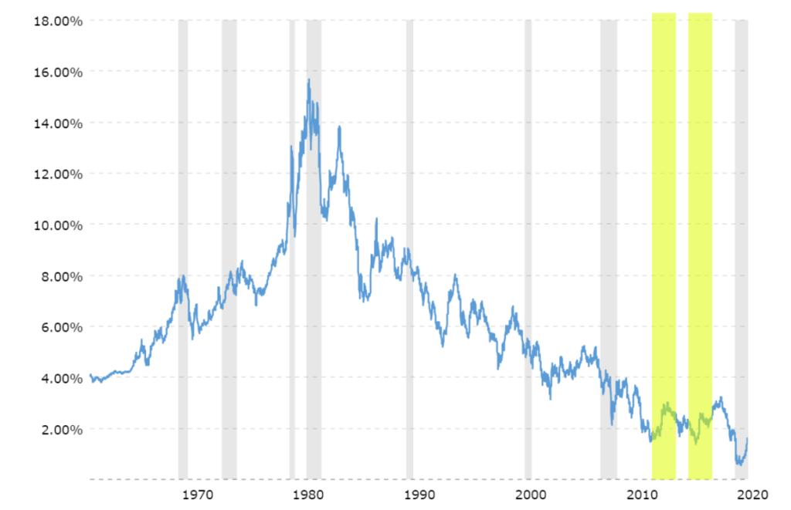
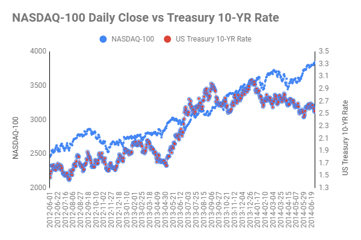
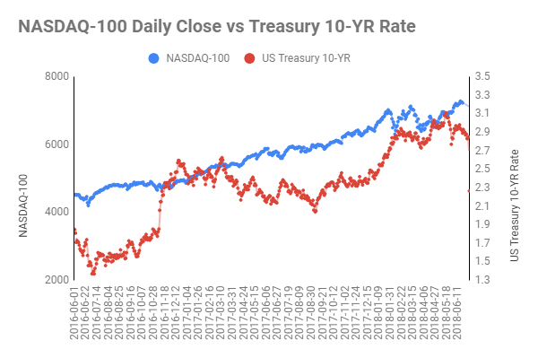

Stay Calm, Yield Shocks are Temporary
March 2021
(Edit: In hindsight, I couldn’t be more wrong in this essay. Read at your own expense.)
The financial world is a swirling vortex of data, where interconnections and correlations shape the marketplace. One relationship, in particular, has piqued my interest recently – the inverse correlation between U.S. 10-year Treasury yields and equity valuations.
In theory, when these yields rise, equity valuations decline due to a higher discount rate. Tech stocks, dependent on growth factors, are especially sensitive to this yield change.
A Recent Case Study
Over the past couple of months, we’ve seen this correlation in action. The 10-year Treasury yield climbed from 0.93% on January 4 to 1.64% on March 12, marking a considerable increase of 70 basis points. In the same timeframe, the NASDAQ-100 index, a tech-heavy indicator, dipped from a high of 13,807.70 to a low of 12,299.62. This 11% decrease over mere weeks raises intriguing questions: Were these downward trends temporary fluctuations spurred by investor sentiment, or are we witnessing more permanent asset value corrections?
Historical Context
To make sense of the current situation, let’s cast our eyes back to two similar periods: the low yields of 2012 and 2016.

US Treasury 10-Year Yield
The 2012 Climb
In July 2012, amid the Eurozone’s sovereign debt crisis, investors rushed to safe-haven debt, causing the yield to plummet. However, as the graph shows, the NASDAQ-100 trended upward over the next couple of years despite occasional turbulence. A strong positive correlation of 0.87 emerged, with no inversion between tech stocks and yield over a more extended 18 to 24 month timeframe.

The 2016 Climb
In July 2016, decade-long weak global GDP growth led to an all-time low yield of 1.37%. With some countries experiencing negative yields, U.S. Treasury bonds appeared more attractive. Despite a few bumps, the NASDAQ rose steadily, mirroring the positive correlation (0.82) of 2012.

The Future of Tech Stocks
The recent yield increase and the subsequent tech sell-off seem to be driven more by panic-induced selling, short-term profit-taking, and sector-rotation, rather than a fundamental shift in asset values. Investors appear to be reallocating capital towards financials and cyclicals, anticipating broader economic recovery.
However, I believe yield-led volatility will soften as investors grow more comfortable with yield movements and can better absorb fluctuations. After capitalizing on the expected rebound growth, many investors are likely to return to the tech sector, given the sector’s potential for sustainable high growth, particularly in the area of disruptive innovation.
Final Thoughts
While the financial landscape is continually shifting, it’s the political and regulatory risks that concern me the most. Issues such as legislative pressures from the Biden administration, including potential anti-trust actions, and fragmented global markets due to rising nationalism pose significant threats. These topics are expansive enough to warrant separate discussions – so stay tuned for more insights in my future posts.
Understanding the dynamics between treasury yields and tech stocks, though complex, can provide valuable insights for investment strategies. But as always, keep in mind that every investment carries risk, and it’s crucial to conduct thorough research before making any financial decisions.
Until next time, happy investing!